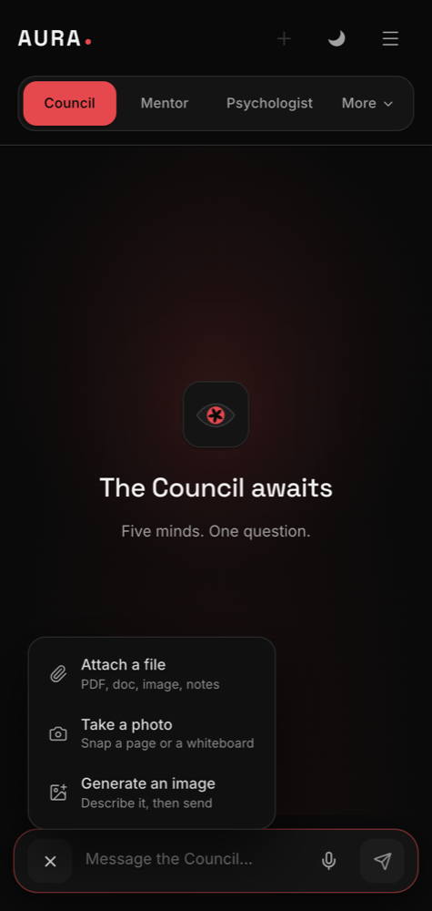

The composer
Send the thing itself.
The plus button opens what you can attach: a document, a photograph from the camera, or a request for an image. Useful when a report, a form or a question sheet is faster shown than typed out.
- PDFs and images up to 3 MB
- The camera opens inside the app
- Up to four attachments on one message